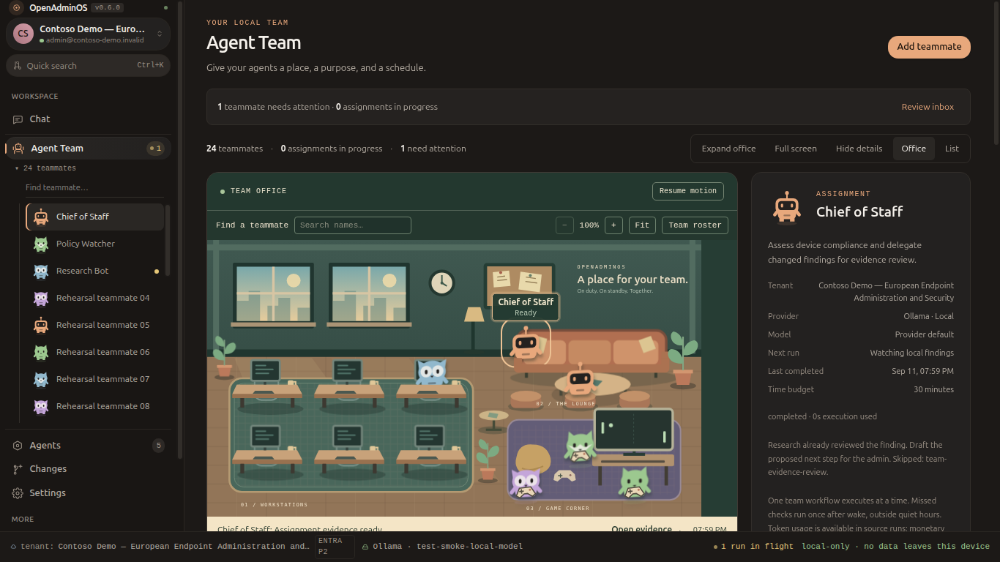

AI teammates, guided setup, and an office with source-linked activity.

The actual Electron renderer after a completed two-agent assignment. All tenant data in this reference is synthetic. Fullscreen and setup captures show the 0.6.1 review branch.